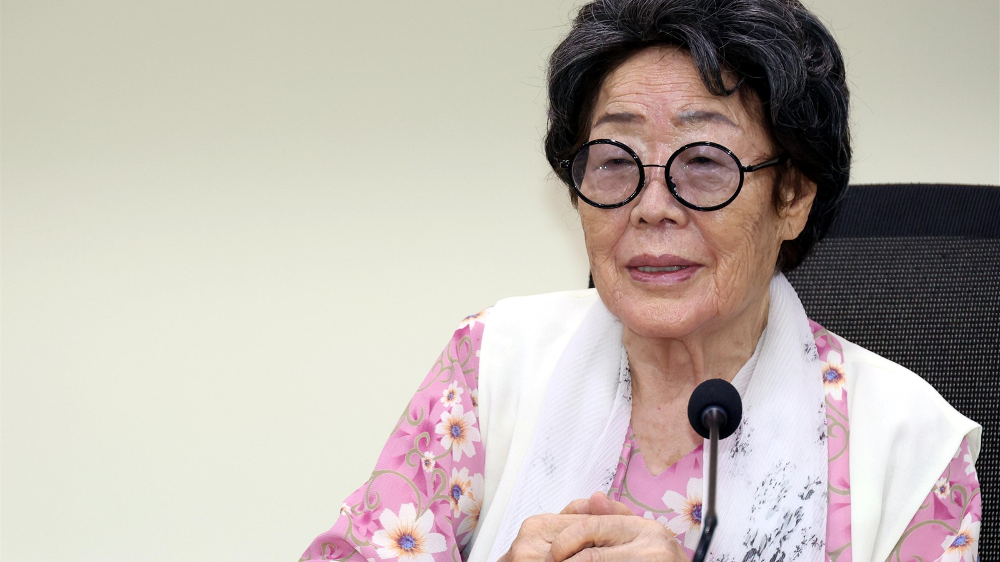

VISUAL NEWSIS
편집#008 · 광복과 기억
1945. 9. 1 · 광복 17일 뒤
내가
증인입니다.
증언은 우리 곁을 떠나도,
기억은 다음 증인에게 건너갑니다.
광복 뒤 처음 맞은 새달의 첫날
내가 증인입니다.
기획·디렉터 = 안재현 기자
VISUAL NEWSIS · 편집#008
왜 9월 1일인가
광복 뒤 처음 시작된 달
1945.
9. 1
8월 15일로부터 17일 뒤
국경일이 아닌
평범한 하루를
바라봤습니다.
우리가 되찾은 것이
단 하루뿐이 아니었기 때문입니다.
45년 8월 15일,
우리가 그 날 되찾은 것은 단 하루가 아닙니다.
그 이후 우리가 누려온 모든 날입니다.
광복 뒤 처음 맞은 새달의 첫날
내가 증인입니다.
VISUAL NEWSIS · 편집#008
1945.8.15 이전의 기록
당신이 지운 날짜 이전에는
このような現実がありました。
これは、実際にあった記録です。
1940
日本式の「氏」を設定し、
届け出るよう強要されました。
1943
学校から朝鮮語の科目が、
完全に消されました。
1943
朝鮮人にも徴兵制が実施され、
一般徴用が適用されました。
그날이 없었다면, 우리는 한글을 배울 수 있었을까요?
빼앗긴 이름 · 언어 · 삶
내가 증인입니다.
VISUAL NEWSIS
편집#008 · 광복과 기억
내가
증인입니다.
처음의 한 사람에서, 오늘의 우리로.
몇 번이고 되새겨 주세요. 우리는 증인입니다.
visual.newsis.com/witness
내가 증인입니다.
기획·디렉터 = 안재현 기자